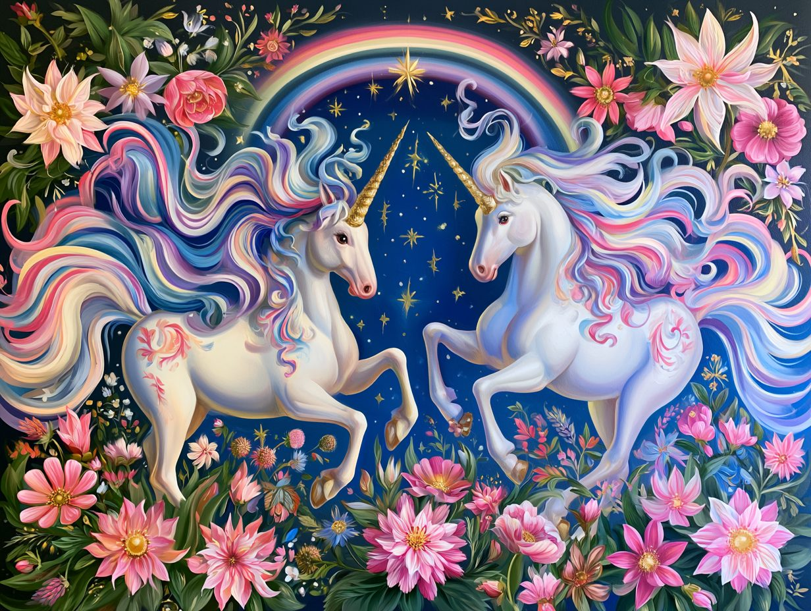

The unicorn as the world imagined it: healer, guardian, and untamable spirit
The unicorn as the world imagined it: healer, guardian, and untamable spirit
Krewe Style
The Unicorn in the Krewe
What we wear on parade day
✨ Click to read the story

In the Krewe of Unicorns, the only rule of dress is to shine. Some members go full mythical, in flowing capes, iridescent wings, and spiral-horn headbands. Others keep it simple with a rainbow sash and a handful of glitter. Wear whatever wonder calls to you; the only requirement is that you wear it proudly.
On parade morning you'll see every version of it rolling out together: capes beside tutus, pastel manes beside neon boas, and horn headbands catching the Florida sun. Add a sash, a good pair of comfortable shoes, and a big handful of beads, and you're parade-ready. New to all this? The lesson cards above sort the looks, and any member will happily help you find your sparkle.